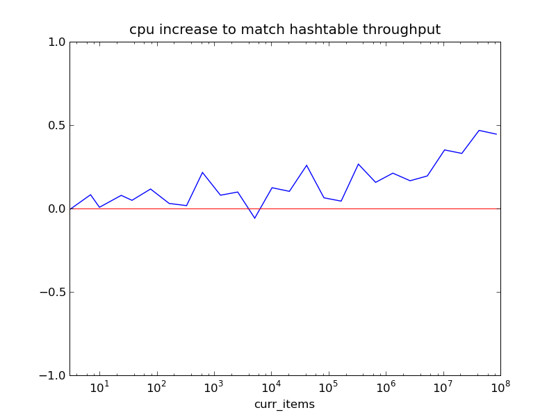

memcached-prefix
by jdybnis
This is an experimental fork of memcached based off of Dustin Sallings' master branch. This branch adds prefix and range commands to the protocol. The new commands are pget, pdelete and rget.
The cache is implemented with a skiplist instead of the normal hashtable. Even so, its performance is very close to the standard memcached (see the benchmarks below). Space usage is also roughly unchanged. Each item in the skiplist uses an average of 3 bytes more than it would use in the hashtable
New Commands
pget key_prefix max_items [continue_key]
pget instructs the server to send back any items that have keys beginning with the key_prefix. The server will send the items in lexographic order by key. max_items is the maximum number of items that the server will send in response to a single command. max_items cannot be greater than 100. The client can use a continue_key to retrieve more. If the command includes a continue_key then the server will only send back items that match the key_prefix and are lexographically after the continue_key.
If the client issues a pget and the server sends back the maximum number of items, the client should assume that there might still be other unsent items on the server that match the key_prefix. The client should issue another pget with the continue_key equal to the key of the last item from the previous pget, the server will respond with the next batch of items in lexographic order.
pdelete key_prefix
pdelete instructs the server to delete all items that have keys beginning in key_prefix.
rget start end start_is_open end_is_open max_items
rget is the same as in memcachedb. See the memcachedb docs for usage instructions.
Note: these commands are not standard and may very well change between versions.
Benchmarks
Setup
The following are benchmarks of memcached-prefix and memcached v1.2.6. The benchmarks were run on a Core i7 920 w/ 12GB RAM and HT enabled. The client was libmemcached based, running in loopback mode against a multi-threaded server on the same machine.
The benchmark starts out by loading items into an empty cache until the cache contains a number of items determined by the run parameters (the x axis of the graphs below). Then for a period of 10 seconds the client issues random commands in the ratio of 90% get to 5% add and 5% delete, and measures the number of operations completed per second. The reported measurements are averages of multiple runs.
Results
The first graph shows that there is a remarkably small decrease in maximum throughput between the standard version of version of memcached (hashtable based) and memcached-prefix (skiplist based). With 100 million items in the cache, the maximum throughput of memcached-prefix is still close to 100,000 ops/sec.

The second graph shows that if the cpu usage is less than 67% (per-core) running the standard memcached, then memcached-prefix will be able to handle that same load on that same machine. This figure (67%) assumes both that there are 100 million items in the cache and that the client and server are running on the same machine. When there are fewer items in the cache or the network overhead is higher then that number will be even higher.
Note: The keys and values used in the above benchmarks were all 8 bytes. This made more items fit into the cache than normal, thereby simulating a server with more RAM. The following graph shows that the results still apply for normal sized keys and values. Using larger keys and values only changes the results by a small constant factor.

Download
You can download this project in either zip or tar formats.
You can also clone the project with Git by running:
$ git clone git://github.com/jdybnis/memcached
Contact
Josh Dybnis (jdybnis@gmail.com)